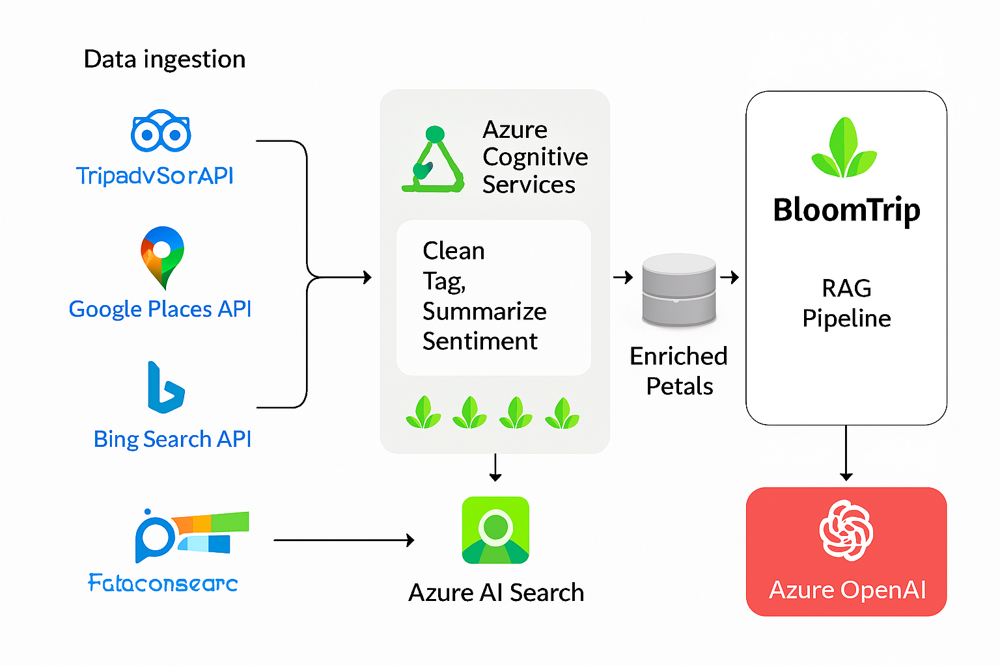

Feasibility on Azure¶
Yes — the BloomTrip product vision is fully achievable on Azure using managed services that cover retrieval, generation, geospatial intelligence, data ingestion, caching, personalization, and compliance controls.
 Figure 9. Azure feasibility architecture overview: ingestion (Functions/Logic Apps) → normalization & enrichment (OpenAI/Cognitive Services) → indexing & retrieval (AI Search hybrid + semantic) → generation (Azure OpenAI) → caching (Redis tiers) → delivery (SPA + APIs + Maps) with governance (Key Vault, Monitor, Entra ID).
??? note "Mermaid Text Fallback (Figure 9)" ```mermaid flowchart LR subgraph Sources A1[Tripadvisor API]:::ext A2[Google Places]:::ext A3[Open Data (OSM/Wiki)]:::ext A4[User Feedback / UGC] end subgraph Ingestion F1[Functions Schedules] F2[Logic Apps Workflows] end subgraph Enrichment E1[Normalization Logic] E2[OpenAI Classification] E3[Cognitive Services (Vision/OCR)] end subgraph Storage S1[(Blob Raw)] S2[(Cosmos / PG Normalized)] S3[(Redis Caches)] end subgraph Retrieval R1[AI Search Index\nBM25 + Vector + Filters] end subgraph Generation G1[Azure OpenAI GPT] end subgraph Delivery D1[API (Functions/Container Apps)] D2[Web SPA] D3[Navigation Deep Links] end subgraph Governance K1[Key Vault] M1[App Insights/Monitor] I1[Entra ID] end
Sources --> Ingestion --> Enrichment --> Storage --> Retrieval --> Generation --> Delivery
R1 --> G1
G1 --> S3
S3 --> D1
D1 --> D2
D1 --> D3
K1 --> D1
I1 --> D1
M1 --> D1
classDef ext fill=#EEE,stroke=#999,color=#333;
```
1. Core Azure Service Alignment¶
| Capability | Azure Service(s) | Role in BloomTrip |
|---|---|---|
| Hybrid Search (BM25 + Vector + Semantic) | Azure AI Search (vector + semantic ranker) | Retrieve petals, trips, guides, events for RAG and swaps |
| Embeddings & Generation | Azure OpenAI (Embeddings + GPT) | Create itinerary drafts, refinement deltas, summaries |
| Geospatial Maps, Routing, Isochrones | Azure Maps | Tiles, routes, distance matrix, traffic, weather layers |
| Ingestion / Orchestration | Azure Functions, Logic Apps, Data Factory | Scheduled pulls, ETL, enrichment pipelines |
| Low‑latency Caching | Azure Cache for Redis | API result cache, semantic response cache, retrieval set cache |
| Primary Data Stores | Azure Cosmos DB (NoSQL) / Azure PostgreSQL | Petals, trips, user library, activity feedback, normalized POI metadata |
| Object / Raw Storage | Azure Blob Storage | Raw source JSON, media assets, archived prompts, embeddings backup |
| Auth / Identity | Microsoft Entra ID (B2C or external IdP) | User auth, admin console, service-to-service OIDC |
| Observability | Application Insights, Log Analytics, Azure Monitor | Latency, errors, cost telemetry, custom RAG metrics |
| Secrets & Keys | Azure Key Vault | API keys (Tripadvisor, Google Places, Maps), OpenAI keys |
| Background Jobs | Azure Container Apps Jobs / Functions timers | Nightly ranking refresh, popularity model update |
| Personalization / ML Ops (future) | Azure Machine Learning | Train + deploy ranking / personalization models |
2. Third‑Party / External Provider Integration¶
| Provider | Use | Notes / TOS Considerations |
|---|---|---|
| Tripadvisor Content API | Rich POI metadata, ratings, categories | Partner access; cache only permitted fields + TTL; store stable IDs |
| Google Places / Geocoding | POI lookup, details, photos metadata | Store Place IDs, minimal cache; refetch on demand for restricted fields |
| Google / Apple / Waze | Navigation deep links | Pure client deep link = low risk (no data retention) |
| Azure Maps (alt to Google for routing) | Tiles, routing, isochrones | Single-vendor simplification; caching within terms |
| Bing / Web Search APIs | Discovery of candidate sources | Treat results as pointers; crawl only licensable pages |
| OpenStreetMap / Overpass | Base open POI + trails | Attribute per ODbL; retain raw + normalized forms |
| Wikivoyage / Wikipedia / Wikidata | Descriptive + structured context | Respect CC BY-SA / attribution; avoid storing full articles verbatim in generated output |
| Eventbrite / Meetup (future) | Local events enrichment | Rate limits; map to Petal event subtype |
Tip: Implement a
PlacesProviderinterface (e.g.getPlace(id),searchPlaces(bounds, filters)) so adapters for Tripadvisor, Google, Azure Maps remain swappable.
3. Open & Extensible Data Sources¶
- Tourism board feeds (events, seasonal closures)
- GTFS transit feeds for travel time context
- User-generated petals (ratings, notes, discoveries)
- Strava / Komoot / AllTrails (licensed) route metadata (future)
Normalize everything into a unified Petal Schema (already defined elsewhere) capturing: core identity, geo, tags, seasonality, family/pet flags, source, license flags, freshness timestamp.
4. RAG Architecture on Azure (High-Level Phases)¶
| Phase | Steps | Azure Components |
|---|---|---|
| Ingest | Fetch → validate → persist raw | Functions / Logic Apps → Blob |
| Normalize | Transform → classify → tag (OpenAI) | Functions + OpenAI + Cosmos/PostgreSQL |
| Index | Embed → upsert vectors + filters | OpenAI Embeddings + AI Search |
| Retrieve | Hybrid (vector + BM25 + filters) + semantic rank | AI Search Semantic + Vector combo |
| Generate | Compose prompt (context slices + user prefs) | Azure OpenAI (GPT) |
| Delta Refine | Constrained segment update prompts | Azure OpenAI + minimal retrieval scope |
| Observe | Log tokens, latency, retrieval hit ratio | App Insights + custom metrics |
Safety: Always include citations (Petal IDs, sources) so generated text can be audited and reinforced.
5. Caching Strategy Layers (Cache‑Augmented Generation)¶
| Layer | Key | TTL | Store | Purpose |
|---|---|---|---|---|
| Provider API | provider:place:{id} | Minutes–Hours (per TOS) | Redis | Reduce external API spend |
| Retrieval Set | retrieval:intent_hash:{hash} | 1–6h | Redis | Avoid requerying index for frequent intents |
| Semantic Response | semantic:trip_seed:{hash} | 6–24h | Redis | Reuse stable itinerary drafts for similar prompts |
| Delta Patch | delta:segments:{tripId}:{scopeHash} | 1h | Redis | Faster rollback / replay of refinements |
| Popular Petals Snapshot | popularity:region:{regionId} | 30–60m | Redis | Low-latency surfacing on homepage / rails |
Invalidation Triggers: petal edit, new rating, stale freshness timestamp, source update event, seasonal boundary crossing.
6. Maps & Navigation Integration¶
Rendering & planning can use Azure Maps (or dual provider abstraction). Deep links remain client side:
| Provider | Deep Link Pattern |
|---|---|
| Google Maps | https://www.google.com/maps/dir/?api=1&origin=LAT1,LON1&destination=LATN,LONN&waypoints=LAT2,LON2\|LAT3,LON3 |
| Apple Maps | maps://?saddr=LAT1,LON1&daddr=LATN,LONN |
| Waze | https://waze.com/ul?ll=LATN,LONN&navigate=yes |
Waypoint Compression: prioritize origin, final destination, must-keep petals, overnights, longest duration, high scenic rating.
7. Practical Implementation Path¶
- Finalize Petal schema & implement normalization pipeline
- Stand up Azure AI Search index (vector + semantic) with pilot dataset
- Add OpenAI embedding + generation flow for initial itinerary creation
- Implement Redis caching scaffolding (provider, retrieval, semantic tiers)
- Build Map provider abstraction & deep link navigation picker
- Instrument telemetry (token usage, retrieval latency, cache hit rate)
- Add feedback ingest (survey) → update Popular Petals ranking nightly
8. Azure Cognitive Services Value Add¶
| Category | Service | BloomTrip Use |
|---|---|---|
| Vision | Computer Vision / Image Analysis | Auto-tag user / partner images (lake, forest, indoor) |
| Vision | OCR (Read) | Extract text from signage / menus for metadata enrichment |
| Language | Text Analytics (Sentiment) | Weight POI quality; filter low-sentiment notes |
| Language | Summarization | Compress long reviews into concise blurbs |
| Language | Entity Linking | Connect unstructured text to canonical places / events |
| Language | Translator | Localize descriptions & prompts |
| Speech | Speech to Text | Voice-driven trip idea capture |
| Speech | Text to Speech | Audio narration of itinerary or navigation hints |
| Decision | Personalizer / Custom models | Future adaptive ranking of suggestions |
| Search | Bing Autosuggest / Web / Images | Discover emerging events / enrich content candidates |
9. RAG + Cognitive Services Pipeline (Augmented)¶
- Ingest raw source → store Blob.
- Vision/OCR tagging & entity linking augment raw metadata.
- Generate embeddings → upsert searchable + filter fields.
- Query: parse user intent → semantic + vector hybrid retrieval.
- Re-rank (semantic ranker + optional learned ranker) → slice top context.
- Prompt assembly (citations + constraints) → OpenAI generation.
- Post-process: citation verification, PII scrub, caching.
- Log metrics & feedback loops (ratings update embeddings periodically / nightly retrain).
10. Governance & Compliance Considerations¶
| Aspect | Control |
|---|---|
| Provider TOS | Metadata field-level flags (cacheable, ttl, rehydrate) |
| PII | Basic regex + Cognitive Services detection pipeline before storage |
| Attribution | Automatic footer injection for OSM / Wikivoyage derived content |
| Data Residency | Select Azure region matching majority user base; replicate read-only search to secondary region |
| Cost Guardrails | Daily budgets: OpenAI tokens, Search queries, Redis memory; alerts via Monitor |
| Security | Key Vault rotation + managed identities for Functions / Container Apps |
11. Suggested Reference Architecture (Conceptual Layers)¶
| Layer | Components | Notes |
|---|---|---|
| Edge / Client | Web SPA (React), Mobile shell (future) | Uses provider deep links for navigation |
| API / Orchestration | Azure Functions + Minimal API / Container Apps | Auth via Entra ID; throttling + caching |
| Data & Content | Cosmos DB, PostgreSQL, Blob Storage | Separation of raw vs normalized content |
| Intelligence | Azure AI Search, Azure OpenAI, Cognitive Services | RAG + enrichment + classification |
| Caching | Redis (tiered namespaces) | Key tagging for targeted invalidation |
| Analytics & Ops | App Insights, Log Analytics, Monitor, Cost Mgmt | Unified dashboard (latency, cost, freshness) |
| Security & Compliance | Key Vault, Entra ID, Defender for Cloud | Least privilege RBAC, secret isolation |
12. Future Enhancements¶
- Personalized ranking model (Azure ML) trained on feedback & usage.
- On-device vector pruning (mobile offline mode) for cached recent petals.
- Multi-lingual itinerary generation with dynamic translation fallback.
- Route optimization with constraints (EV charging, daylight windows).
- Real-time event injection (webhooks) into active itineraries.
13. Cross-Links¶
04_solution-design.md • rag_pipeline.md • architecture/azure_overview.md • mockups/trip-feedback-survey.md
Last updated: 2025-09-05